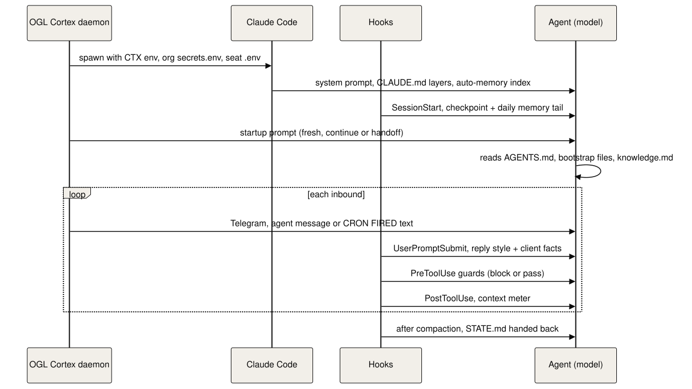

Every file that shapes how OGL Cortex behaves, the real shape of each record type, how a turn's context is assembled, and which file owns each kind of setting.
Placeholders ($CORTEX_HOME, $CTX_ROOT, <instance>, <org>, <seat>, <project-slug>) are defined in 01.
Why a registry
Three different readers consume configuration:
- Claude Code reads settings, CLAUDE.md files, hooks, skills, MCP config and auto-memory.
- The OGL Cortex daemon reads seat
config.json,.envfiles, orgcontext.json,crons.jsonandenabled-agents.json. - The model reads bootstrap files because a prompt tells it to.
When one fact lives in two files, the copies drift, and a seat acts on whichever copy it reads first. This registry names one owner file for each kind of setting.
Terms:
- Seat: one agent's folder,
orgs/<org>/agents/<seat>. - Hook: a command Claude Code runs at a fixed moment (before a tool call, after compaction). It can block the action or add context.
- Compaction: Claude Code summarising the conversation when the context window fills.
- Gate: the auditor seat checking an artifact and returning PASS or FAIL.
.gated-<sha>: a read-only frozen copy of a file at the exact version the auditor passed..bak-<timestamp>-<reason>: a manual backup taken before an edit.
1. The registry
1.1 Who reads what

1.2 Registry table
Guard names used below:
- Surface guard:
shared_surface_guard.py(sourceharness/hooks/shared_surface_guard.py, installed to<seat>/.claude/hooks/ogl/, or~/.claude/hooks/ogl/with--user-level), a PreToolUse hook that blocks Bash writes to shared roots. Default roots:~/.claude,~/.claude.json, the shared uv cache, global npm andbrew upgrade, plus any root inOGL_SURFACE_EXTRA_ROOTS; writes under~/.claude/projects/are exempt (rules insurface.py). Seat folders are not in the default list. - Hash watch (optional, not included): an infrastructure-seat cron that hashes every watched settings, hook, skill, CLAUDE.md and MCP file and pages the orchestrator once per change.
- Auditor gate: auditor review before a change goes live, with a
.gated-<sha>copy kept.
The command-line tool is named cortextos.
| # | Path | Owner | Controls | Who edits | Change guard | Version control |
|---|---|---|---|---|---|---|
| 1 | ~/.claude/settings.json |
Owner | User-level hooks (for example the ship gate), enabled plugins, marketplaces, env such as DISABLE_AUTOUPDATER=1, TUI options |
Owner; seats only with a surface-guard pass token | Surface guard, hash watch | Recommended: a private local git repo for ~/.claude config and hooks |
| 2 | ~/.claude/CLAUDE.md |
Owner | Global instructions for every Claude session on the host: memory read order, ship gate, coding guidelines, file naming | Owner. Memory tools may rewrite a generated block inside it | Surface guard, hash watch | As above |
| 3 | ~/.claude.json |
Claude Code and owner | MCP servers: mcpServers at user scope and projects.<path>.mcpServers per project. Claude Code also writes session state here constantly |
Claude Code; owner for MCP edits | Surface guard; hash watch on the mcpServers subtree only |
Not suitable for git (volatile); back up mcpServers separately |
| 4 | ~/.claude/hooks/ogl/ (only with install.sh --user-level) |
OGL layer authors; consumed by all seats | Machine-wide guards: ship_gate.py, shared_surface_guard.py (imports surface.py, codewrites.py), orwell_lint.py |
Orchestrator under auditor gate | Surface guard (pass token only), hash watch, .gated-<sha> copies |
Git |
| 5 | <seat>/.claude/settings.json |
Seat owner; orchestrator writes most | Hooks, statusLine, permissions, autoCompactWindow |
Orchestrator, the seat | Hash watch | Seat git repo |
| 6 | <seat>/config.json |
Framework schema | Runtime, model, profile, timezone, day/night window, approval rules, context thresholds, session length. May hold a legacy crons array |
Orchestrator, owner, dashboard | Daemon re-reads ctx_* thresholds on mtime change (src/daemon/fast-checker.ts) |
Seat git repo |
| 7 | <seat>/goals.json and GOALS.md |
Orchestrator writes every seat's goals | Daily focus, goals, bottleneck. GOALS.md is generated: do not edit |
Orchestrator via the goal-management skill; cortextos goals generate-md |
None | Seat git repo |
| 8 | orgs/<org>/goals.json |
Owner (north star), orchestrator (daily focus) | North star, daily focus, org goals | Orchestrator per goal-management skill | None | Org repo (the framework repo ignores orgs/) |
| 9 | $CTX_ROOT/.cortextOS/state/agents/<seat>/crons.json |
Daemon | Live cron schedule. Envelope {updated_at, crons[]} (src/bus/crons.ts) |
cortextos bus add-cron, update-cron, remove-cron |
Atomic write and per-seat lock (src/bus/crons.ts); automatic crons.json.bak |
Export with list-crons into a tracked file if you want history |
| 10 | <seat>/.env |
Owner | Seat secrets: BOT_TOKEN, CHAT_ID, ALLOWED_USER, plus integration keys |
Owner only | Seat .gitignore excludes .env*; the bus refuses to read .cortextos-env (src/bus/system.ts) |
Never in git |
| 11 | orgs/<org>/secrets.env |
Owner | Org-wide secrets loaded into every seat before the seat .env (src/pty/agent-pty.ts) |
Owner | None | Never in git |
| 12 | <seat>/.cortextos-env |
Daemon (generated) | CTX_* path variables, rewritten on every start (src/daemon/agent-process.ts) |
Daemon only | Regenerated | Ignore |
| 13 | orgs/<org>/context.json |
Owner | Org name, timezone, day window, orchestrator name, default approval categories, comms style, optional require_deliverables |
Owner, orchestrator | None | Org repo |
| 14 | orgs/<org>/knowledge.md |
All seats (append) | Shared fact base read at every session start | Any seat | None | Org repo |
| 15 | $CTX_ROOT/config/enabled-agents.json |
Daemon | Which registered seats start | cortextos start <seat>, cortextos stop <seat> |
Daemon writes | Back up on change |
| 16 | $CORTEX_HOME/templates/ |
Framework upstream | Starting shape for new seats: agent, orchestrator, analyst, agent-codex, agent-opencode, hermes, m2c1-worker, org |
Upstream; the analyst's drift check watches it | Framework git | Framework repo |
| 17 | <seat>/ENTITIES.md |
Orchestrator | Canonical noun index: people, places, prices | Orchestrator, behind a written write gate | Prose gate | Seat git repo |
| 18 | <seat>/MEMORY.md, auto-memory |
Seat | Long-term memory (4.1) | Seat, or a nightly consolidation cron prompt you write (no code ships) | Hash watch on bootstrap names | Seat git repo (auto-memory lives under ~/.claude/projects/) |
| 19 | <seat>/STATE.md |
Seat | Where the work stands; re-injected after compaction | Seat | None | Seat git repo |
| 20 | <seat>/.claude/hooks/ogl/ |
Seat owner | Hooks installed by harness/install.sh: the guards and the compaction kit (compaction/: meter.py, after_compact.py, save_summary.py, common.py, compaction.json) |
Orchestrator under auditor gate | Hash watch, .gated-<sha> |
Seat git repo |
| 21 | <seat>/.claude/skills/, ~/.claude/skills/ |
Template and seat; owner for user skills | Skill text loaded on demand | Orchestrator | Hash watch | Seat repo; user skills in the ~/.claude repo |
| 22 | <seat>/.claude/agents/*.md, ~/.claude/agents/ |
Seat, plugins | Subagent definitions | Orchestrator | Hash watch | Seat repo |
1.3 Hook sets by role
| Role | Typical hook commands | Notes |
|---|---|---|
| Orchestrator | template hooks plus all of harness/settings.example.json |
Ship gate, surface guard, send guard, brief guard, future-time guard and the compaction kit |
| Analyst, auditor, specialist | template hooks plus a subset | Send guard, surface guard (warn mode), ship gate; add the compaction kit for long sessions |
| Infrastructure specialist | a small set | Send guard and surface guard in strict mode (omit SURFACE_CODE_MODE=warn); no Telegram permission hooks |
| Template default | 6 to 7 | hook-planmode-telegram, hook-permission-telegram, hook-loop-detector, hook-ask-telegram, crash-alert, hook-compact-telegram, plus hook-idle-flag on analyst and agent |
Every template ships cortextos bus hook-loop-detector as a PreToolUse hook (templates/orchestrator/.claude/settings.json). Keep it unless you replace it with an equivalent.
Keep hook scripts in <seat>/.claude/hooks/ (the installer uses <seat>/.claude/hooks/ogl/) or <seat>/tools/. A hook registered from a deliverables or scratch folder disappears silently when someone cleans that folder.
1.4 Backups and frozen copies
- Take a
.bak-<UTC timestamp>-<reason>copy before editing any settings or hook file by hand. - After the auditor passes a hook or guard, copy it to
<file>.gated-<sha>andchmod 400it. The next change is then a diff against the passed version. - With a git repo for
~/.claude/hooksand each seat, prefer commits and tags over loose.bakfiles.
2. Record shapes
2.1 Seat config.json
Template default (templates/orchestrator/config.json, crons omitted):
{
"agent_name": "{{agent_name}}",
"enabled": true,
"runtime": "claude-code",
"startup_delay": 0,
"max_session_seconds": 255600,
"max_crashes_per_day": 10,
"working_directory": "",
"timezone": "",
"day_mode_start": "",
"day_mode_end": "",
"communication_style": "",
"approval_rules": {"always_ask": [], "never_ask": []},
"ecosystem": {"local_version_control": {"enabled": true}}
}A configured orchestrator adds model and context settings:
{
"agent_name": "boss",
"enabled": true,
"runtime": "claude-code",
"startup_delay": 0,
"max_session_seconds": 255600,
"max_crashes_per_day": 10,
"working_directory": "$CORTEX_HOME/orgs/<org>/agents/boss",
"timezone": "America/New_York",
"day_mode_start": "09:00",
"day_mode_end": "21:00",
"communication_style": "Terse. Lead with the answer.",
"approval_rules": {"always_ask": ["external-comms", "financial", "deployment", "data-deletion"], "never_ask": []},
"ecosystem": {"local_version_control": {"enabled": true}},
"model": "<model id>",
"profile": "<profile>",
"ctx_warning_threshold": 80,
"ctx_handoff_threshold": 88
}working_directory must be an absolute path in the real file. 255600 seconds is 71 hours, the default --continue rotation. Other keys the daemon reads: dangerously_skip_permissions (default on unless false), telegram_polling, voice_id. Analyst templates add ecosystem.upstream_sync, catalog_browse and community_publish. agent-codex sets runtime: "codex-app-server"; agent-opencode sets runtime: "opencode".
2.2 goals.json
Seat file:
{
"focus": "One sentence: what this seat works on today.",
"goals": ["Goal one", "Goal two"],
"bottleneck": "What blocks progress, or empty.",
"updated_at": "2026-01-01T09:00:00Z",
"updated_by": "boss"
}The org file (orgs/<org>/goals.json) adds north_star, daily_focus and daily_focus_set_at.
2.3 crons.json entry
{
"name": "morning-review",
"prompt": "Read .claude/skills/morning-review/SKILL.md and execute the morning review workflow, including goal cascade from .claude/skills/goal-management/SKILL.md. Send at most one consolidated Telegram. Then run: cortextos bus update-cron-fire morning-review",
"schedule": "0 8 * * *",
"enabled": true,
"created_at": "2026-01-01T00:00:00.000Z",
"metadata": {"migrated_from_config": true, "original_type": "recurring"},
"last_fired_at": "2026-01-02T08:00:05.343Z",
"fire_count": 1,
"last_fire_attempted_at": "2026-01-02T08:00:05.343Z"
}Five-field expressions run on the daemon's local clock (02, section 6.2). The legacy template form in config.json uses type and cron keys; migration converts it to this shape.
2.4 settings.json hook block
{
"hooks": {
"PreToolUse": [
{
"matcher": "Bash",
"hooks": [{"type": "command",
"command": "python3 \"$CLAUDE_PROJECT_DIR\"/.claude/hooks/ogl/brief_guard.py"}]
},
{
"matcher": "Bash|Write|Edit",
"hooks": [{"type": "command",
"command": "python3 \"$CLAUDE_PROJECT_DIR\"/.claude/hooks/ogl/future_time_guard.py",
"timeout": 5}]
}
]
},
"statusLine": {"type": "command", "command": "cortextos bus hook-context-status", "refreshInterval": 5},
"autoCompactWindow": 430000
}Claude Code sets $CLAUDE_PROJECT_DIR to the seat directory when it runs a hook command. The full block the installer merges is harness/settings.example.json. The statusLine command writes context_status.json, which the daemon reads for context handoff.
2.5 Skill frontmatter
---
name: goal-management
description: "Daily goal lifecycle management. Use for: morning briefing goal cascade, setting daily focus, refreshing agent goals, reviewing goal progress."
triggers: ["goals", "daily focus", "priorities", "goal cascade"]
---Only name and description are parsed (src/cli/list-skills.ts). triggers is a hint for the model.
2.6 Auto-memory file frontmatter
---
name: lookup-before-inference-for-owned-systems
description: "For a system whose mechanism is written in code you own, read the source before inferring."
metadata:
node_type: memory
type: feedback
originSessionId: <session uuid>
modified: 2026-01-01T00:00:00.000Z
---type is one of feedback, project, reference, user. The index MEMORY.md carries one short line per file.
2.7 Task record
$CTX_ROOT/orgs/<org>/tasks/<task_id>.json:
{
"id": "task_<epoch ms>_<random>",
"title": "Scan untracked directories for credentials before auto-commit",
"description": "TASK: ...\nFILES: ...\nBAR: ...\nRETURN: ...",
"type": "agent", "needs_approval": false, "status": "in_progress",
"assigned_to": "<seat>", "created_by": "<orchestrator>", "org": "<org>",
"priority": "normal", "project": "", "kpi_key": null,
"created_at": "2026-01-01T05:04:37Z", "updated_at": "2026-01-01T05:04:49Z",
"completed_at": null, "due_date": null, "archived": false
}The four TASK/FILES/BAR/RETURN lines are enforced by brief_guard.py on dispatches.
2.8 Inbox message
$CTX_ROOT/inbox/<seat>/<priority>-<epoch ms>-from-<sender>-<rand>.json, moved to inflight/ then processed/:
{
"id": "<epoch ms>-<sender>-<rand>",
"from": "<sender>", "to": "<seat>", "priority": "normal",
"timestamp": "2026-01-01T05:04:49.000Z",
"text": "ACK task_<id>. Starting now.",
"reply_to": "<original msg id>",
"sig": "<HMAC-SHA256, keyed by $CTX_ROOT/config/bus-signing-key>"
}2.9 truth_correction event
Written by harness/tools/emit-truth-correction.sh. Keep one copy on PATH or call it from the repo checkout. Events land in $CTX_ROOT/orgs/<org>/analytics/events/<seat>/<date>.jsonl:
{
"id": "<epoch>-<seat>-<rand>", "agent": "<seat>", "org": "<org>",
"timestamp": "2026-01-01T21:58:29Z", "category": "action",
"event": "truth_correction", "severity": "info",
"metadata": {
"kind": "self_correction", "caught_agent": "<seat>", "caught_by": "<seat>",
"catcher_type": "party", "triggering_msg": null,
"occurred_at": "2026-01-01T21:58:29Z",
"dedupe_key": "<seat>.<slug>.<UTC stamp>",
"claim": "Reported 69 duplicate items",
"correction": "13 real duplicates; 56 were untitled items grouped together; corrected in the next message",
"evidence": "<path to log or receipt>"
}
}The script enforces a canonical kind enum, a derived caught_by, an injective dedupe_key and no future occurred_at. One file plus symlinks is the recommended pattern for any script shared across seats.
2.10 Templates
| Template | Model / runtime | Default crons | Default hooks | Use for |
|---|---|---|---|---|
orchestrator |
unset / claude-code |
heartbeat, check-approvals, morning-review, evening-review, weekly-review | 6: plan-mode, permission, loop-detector, ask, crash-alert, compact | The seat the owner talks to |
analyst |
unset / claude-code |
heartbeat, usage-monitor, nightly-metrics, auto-commit, check-upstream, catalog-browse | 7 (adds idle flag) | Analyst and auditor seats |
agent |
unset / claude-code |
heartbeat | 7 | Specialists |
agent-codex |
gpt-5-codex / codex-app-server |
heartbeat | none (Codex) | Codex-backed specialists |
agent-opencode |
openai/gpt-4.1-nano / opencode |
heartbeat | none | OpenCode-backed specialists |
hermes, m2c1-worker |
template-specific | Special-purpose workers | ||
org |
n/a | n/a | n/a | New org: context.json, goals.json, knowledge.md, brand-voice.md |
Create a seat with cortextos add-agent <name> --template <template>. Fill IDENTITY.md after creation: cortextos bus list-agents builds the role string from it (src/bus/agents.ts). Local edits to template skills will conflict with a later template upgrade; keep a list of skills you changed.
3. Prompt assembly
3.1 Layers in order

3.2 Environment variables
The daemon sets these in every seat terminal (src/pty/agent-pty.ts):
| Variable | Value | Used for |
|---|---|---|
CTX_INSTANCE_ID |
<instance> |
Picks the runtime root. Defaults to default when unset (src/utils/env.ts) |
CTX_ROOT |
~/.cortextos/<instance> |
Runtime state root |
CTX_FRAMEWORK_ROOT |
$CORTEX_HOME |
Framework repo |
CTX_AGENT_NAME |
<seat> |
Seat identity; hooks key per-seat pass tokens on it |
CTX_ORG |
<org> |
Org |
CTX_AGENT_DIR |
seat path | Hooks that need the seat folder |
CTX_PROJECT_ROOT |
$CORTEX_HOME |
Fallback framework root |
CRM_AGENT_NAME, CRM_TEMPLATE_ROOT |
same as above | Backward compatibility |
CTX_TELEGRAM_CHAT_ID |
copy of CHAT_ID |
Alias |
CTX_TIMEZONE, TZ |
config.json timezone |
Local time in the session |
CTX_ORCHESTRATOR_AGENT |
context.json orchestrator |
Who to escalate to |
The daemon writes these to <seat>/.cortextos-env on each start. Secret load order: org secrets.env first, then the seat .env. A key defined in both takes the seat value without warning, so define each key in one file only.
3.3 Startup prompt
buildStartupPrompt() (src/daemon/agent-process.ts) composes: current UTC time; "Read AGENTS.md and all bootstrap files"; "do NOT call CronCreate"; overdue reminders; the deliverables rule if context.json sets require_deliverables; a handoff block after a context handoff; and "Send a Telegram message to the user saying you are back online" unless telegram_polling is false. A --continue restart uses buildContinuePrompt().
3.4 Cron prompts
The scheduler injects [CRON FIRED <iso>] <name>: <prompt> (src/daemon/agent-manager.ts). A manual fire from the dashboard injects [CRON: <name>] <prompt> (src/daemon/ipc-server.ts). Hooks that special-case crons must match both prefixes.
Cron prompts can carry real logic, for example a liveness canary procedure inside the heartbeat prompt. Such logic is outside hook review and outside git unless you export it. Prefer a short prompt that points to a skill or script in the seat repo.
3.5 Hook-injected context (orchestrator reference set)
| When | Hook | Injects |
|---|---|---|
SessionStart (compact) |
<seat>/.claude/hooks/ogl/compaction/after_compact.py |
Full STATE.md, "Trust it over the summary" |
| PostToolUse | <seat>/.claude/hooks/ogl/compaction/meter.py |
Context meter nudge and warning at the token counts in compaction.json |
| SessionStart (any) | <seat>/.claude/hooks/ogl/memory/sessionstart_inject.py |
The newest pre-compaction checkpoint and the tail of today's daily memory |
| UserPromptSubmit | Optional: memory/client-graph/recall_hook.py, memory/session-digest/index/recall_hook.py |
Client graph facts or notes search hits. A reply-style router is not included |
3.6 Goals cascade
- The orchestrator reads
orgs/<org>/goals.json, asks the owner for the day's focus, and writesdaily_focus. - It writes each active seat's
goals.json. cortextos goals generate-md --agent <seat> --org <org>rendersGOALS.mdfrom that seat'sgoals.jsononly (src/cli/goals.ts).- It messages each seat.
To prove the cascade ran, the morning-review cron should check that updated_at is today on every running seat's goals.json. Write each goals.json with an atomic write (temp file plus rename).
Check scripted phrases in skills against the send guard's banned-phrase list. A skill that tells the seat to open with a stock phrase the guard bans produces a block on every run.
4. Keeping configuration consistent
4.1 One long-term memory store per seat
A seat can end up with three memory stores: the root <seat>/MEMORY.md, a <seat>/memory/MEMORY.md, and Claude Code's native auto-memory under ~/.claude/projects/<project-slug>/memory/. In-session memory writes land in the native store. Pick one store as the long-term memory, keep it under the 200-line index limit, and point the boot list at it. If you keep a second file, name it in the boot list or delete it.
Warnings that point at line numbers in another file go stale when that file is rewritten. Point at a named entry instead.
4.2 Facts that tend to drift
| Fact | Copies that drift | Owner |
|---|---|---|
| Cron file path | Template prose versus src/bus/crons-schema.ts |
The code; always use the bus commands |
| Cron list | Legacy config.json crons array versus crons.json |
crons.json |
| Boot message | AGENTS.md, CLAUDE.md, daemon startup prompt |
AGENTS.md plus telegram_polling |
| Model | Prose in CLAUDE.md versus config.json model |
config.json |
| Context limits | config.json ctx_*, settings.json autoCompactWindow, compaction.json |
Pick one policy (02, section 4.5) |
| Org defaults | context.json versus each seat config.json |
context.json |
BOT_TOKEN, CHAT_ID |
Org secrets.env versus seat .env |
One file per key |
| Prices and nouns | ENTITIES.md versus MEMORY files |
ENTITIES.md |
| Fleet roster | A hand-written FLEET.md versus enabled-agents.json |
enabled-agents.json |
4.3 Retired seats
cortextos stop <seat> stops a seat but leaves its folder, state folder, heartbeat record and crons.json. Crons for a seat with no running process do not fire, but they still appear in exports. When you retire a seat for good, archive its folder and remove its state folder and crons.json.
4.4 Version control
$CORTEX_HOME/.gitignoreignoresorgs/. Give the org and each seat its own private repo, with.env*,telegram-images/and deliverables ignored.- Put
~/.claude/hooks,~/.claude/settings.jsonand~/.claude/CLAUDE.mdin a private local repo. - The hash watch pages on change but does not keep the old version. Git does.
- The analyst's nightly
auto-commitcron snapshots seat repos locally and never pushes. Scan untracked folders for credentials before each commit.
5. One owner file per setting
| Setting | Owner file | Other copies |
|---|---|---|
| Schedules | crons.json, edited only through cortextos bus add-cron, update-cron, remove-cron |
Remove the crons array from config.json after migration |
| Which seats run | $CTX_ROOT/config/enabled-agents.json |
Generate any human roster from it |
| Model, runtime, session length, context thresholds | Seat config.json |
No model names in prose. One context policy |
| Org defaults (timezone, day window, approval categories, comms style) | orgs/<org>/context.json |
Seat config.json only where a seat differs |
| Hooks every seat needs | ~/.claude/settings.json |
Note: user-level hooks also apply to the owner's interactive Claude sessions |
| Seat-specific hooks | <seat>/.claude/settings.json |
Scripts under <seat>/.claude/hooks/ or <seat>/tools/ |
| Hook code | ~/.claude/hooks/, <seat>/.claude/hooks/, both in git |
.gated-<sha> as tags or commits |
| Secrets | Seat .env for seat keys, orgs/<org>/secrets.env for shared keys |
Never the same key in both |
| Boot procedure | AGENTS.md |
CLAUDE.md points to it |
| Goals | orgs/<org>/goals.json, seat goals.json |
GOALS.md generated only |
| Nouns and prices | ENTITIES.md |
MEMORY files carry pointers |
| Long-term memory | One store per seat, under 200 index lines | Merge or delete the rest |
| Work state across compaction | STATE.md |
Checkpoint injection points to it |
| Shared scripts | One file plus symlinks | No copies |
| Identity | IDENTITY.md per seat |
Fill it at creation |
6. Known limitations
orgs/is outside the framework repo. Seat and org config has no history unless you add repos (4.4).- No config file is validated at write time. A malformed
config.jsonorsettings.jsonfails at the next start or the next hook run. - Seat
.envsilently overrides orgsecrets.env. There is no warning for a key defined twice. cortextos goals generate-mdreads only the seatgoals.json. It does not merge the org file.- Template skills edited in a seat do not merge on upgrade. A template update overwrites or conflicts with local edits.
- Manual cron fires use a different prefix.
[CRON: <name>]from the dashboard versus[CRON FIRED <ts>]from the scheduler. list-agentsmode is self-reported. The day or night mode shown per seat comes from the seat, not from the daemon's clock.- Retired seats leave state behind. Stopped seats keep heartbeat records, state folders and cron files until removed.
Source files
src/bus/crons.ts,src/bus/crons-schema.ts,src/bus/agents.ts,src/bus/system.tssrc/types/index.tssrc/daemon/cron-migration.ts,src/daemon/cron-scheduler.ts,src/daemon/agent-manager.ts,src/daemon/ipc-server.ts,src/daemon/agent-process.ts,src/daemon/fast-checker.tssrc/pty/agent-pty.tssrc/utils/env.tssrc/cli/goals.ts,src/cli/list-skills.tstemplates/*/config.json,templates/*/.claude/settings.json,templates/org/.gitignore